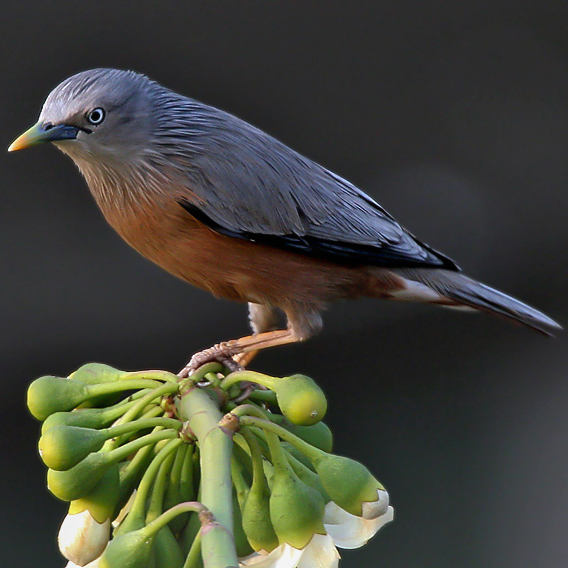

|  | ||||
|---|---|---|---|---|
| Home | eStore | Products & Services | Consultation | About Us |
About Starling Shrub StartersStarling Shrub Starters was founded by Jason and Janel Starling in early 2022 when our journey as plant parents grew to a point that we wanted to share our experience with others. We felt very inspired to reach out into our community to help others begin their own journey as plant parents, even to those who felt they were incapable of fostering such care needed for these little ones. We began by establishing Starling Shrub Starters in our local area and identifying specific plant species which were easiest to grow in nearly any local home setting. Then we would make sure customers had all the tools necessary to cultivate the proper care for their new plants. We decided that offering consultation for various plant care needs would also be helpful as there were many questions customers would ask. This also gave rise to community workshops which focused on specific plant care topics. |
||||
Our VisionTo inspire the community and help it grow! We believe in partnerships and collaboration. Through workshops and consultations, we strive to be a positive and helpful resource to the community. |
||||
Our Mission StatementTo provide products and services to the local community. We want to grow with the community and help others grow as well. We are committed to providing quality products and services and ensuring the highest customer satisfaction. Starling Shrub Starters provides products and services which focus on helping others grow their home garden. We specialize in flora local to Florida and the conditions to optimize proper plant care. Our consultation services and workshops help to educate the community and ensure resources are available to support plant care to the community. |
||||
| Starling Shrub Starters © 2022, Jason Starling. All rights
reserved. Original image of Starling bird licensed under the GNU Free Documentation License and the Creative Commons Attribution-Share Alike 3.0 Unported license |
||||
| Contact Us Site Map | ||||
{kind=link}